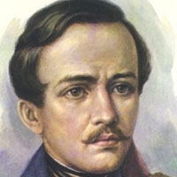
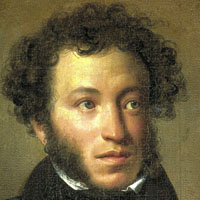

На данном сайте вам будет рассказано про двух величайших поэтов этого века - Пушкин и Лермонтов.
 Биография: Лермонтов Михаил Юрьевич (1814г - 1841г), русский поэт. В 1827 году Лермонтов приехал в Москву, начал писать стихи, создал первые поэмы («Черкесы», «Кавказский пленник»), отмеченные подражанием Александру Сергеевичу Пушкину.
Произведения: Каллы (1830 - 1831), Корсар (1828), Литвинка (1832), Монго (1836), Моряк (1832), Мцыри (1839), Олег (1829)
 Биография: Александр Сергеевич Пушкин (06.06.1799 - 10.02.1837) Величайший русский поэт и писатель, родоначальник новой русской литературы, создатель русского литературного языка. Окончил Царскосельский (Александровский) лицей (1817).
Произведения: Евгений Онегин, Езерский, Кавказский пленник, Медный всадник, Песни западных славян (сборник стихов), Полтава, Руслан и Людмила, Тазит, Цыганы, Бахчисарайский фонтан, Братья разбойники